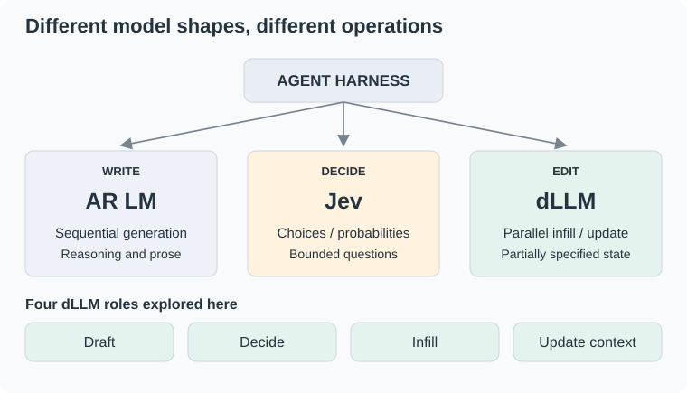
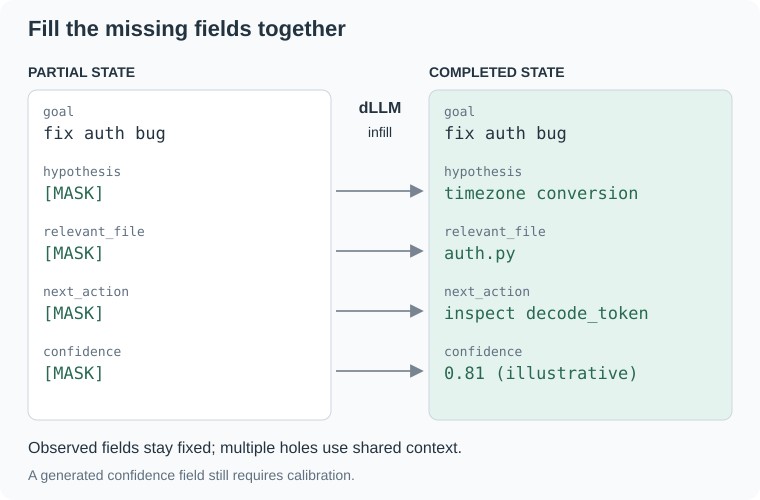
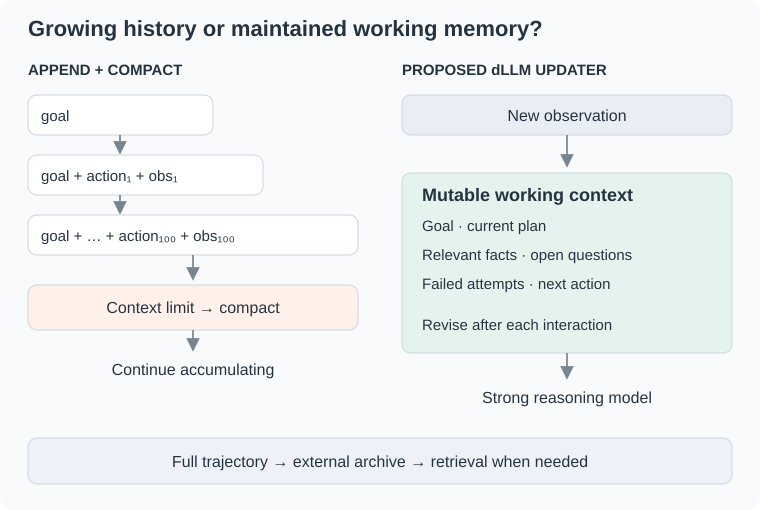
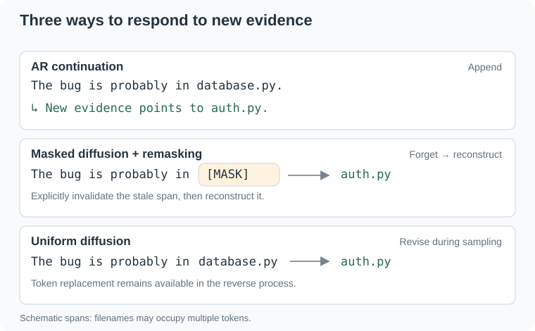

Contents
Alex Zhang recently wrote a nice post about the "shape" of language models. The basic argument is that we usually design the harness around the language model, rather than designing the model around the harness.
Most language models have essentially the same shape:
This is an extremely general interface, which is probably why it has survived for so long. But an agent harness does much more than write text. It repeatedly asks questions like:
- Which action should I take?
- Should I call a tool or think longer?
- Which tool should I call?
- Did the previous action succeed?
- What information is missing from this object?
- Can I cheaply propose something for a stronger model to verify?
Using an autoregressive LLM for all of these operations may be a bit like using a compiler every time we need an if statement.
The recent release of Jev makes this particularly visible. Jev takes a state and typed questions, returning choices, scores, or probabilities that software can consume directly. Restricting the output space makes the model much less general, but also potentially much faster and cheaper for the particular operations that appear constantly inside an agent loop.
This made me wonder whether diffusion language models have another useful shape for agent harnesses: as a primitive inside the harness, even when an autoregressive model still handles the main reasoning.

Diffusion models as fast draft models
The most obvious use is speculative generation.
An autoregressive model has an inconvenient property for drafting: even if I only need a rough proposal, I still have to generate it token by token.
Masked diffusion models such as LLaDA make a different interface concrete at LLM scale: predict masked positions using bidirectional context and reveal tokens over a sequence of denoising steps. Many positions can be predicted in parallel:
This suggests a natural division of labor:
Recent work such as DiffuSpec already explores this direction, using a diffusion LM as a parallel speculative drafter for an AR verifier. It reports up to 3× wall-clock speedup in its evaluated settings; that is evidence for drafting, not a measured speedup for the agent architecture proposed here.
For agents, this seems particularly interesting because many intermediate generations do not need to be perfect. A harness may only need a candidate command, short plan, query, tool argument, or next action that a stronger model or external environment can cheaply check.
The model does not always need to finish the thought. Sometimes it only needs to propose something worth checking. The speed advantage depends on how many denoising steps are needed and how often the verifier accepts the proposal.
Diffusion models as Jev-like decision models
There is another, slightly stranger possibility.
Suppose an agent reaches a state \(s\) with a set of possible actions
We normally serialize this into text, ask an LLM something like
Which action should I take?
and autoregressively generate an answer.
But this is not fundamentally a text-generation problem. It is a decision problem.
Jev makes this explicit by changing the model interface.
A diffusion model might occupy an interesting middle ground. Instead of generating an unrestricted continuation, we could construct a small partially masked object representing the decision:
state: ...
actions:
0: click(search)
1: open(result_3)
2: think
3: ask_user
decision: [MASK]
confidence: [MASK]and ask the model to resolve only the uncertain variables.
More generally, the output could contain several related decisions:
{
"action": "<MASK>",
"should_think": "<MASK>",
"should_verify": "<MASK>",
"risk": "<MASK>"
}These fields need not be generated sequentially: their answer slots can be evaluated in parallel using the same state and surrounding structure. With iterative refinement, filled slots can also provide context for later updates.
That is a different computational shape from both an AR language model and a pure classifier.
There is already a concrete implementation of this idea. In How to build a Jev-style classifier with DiffusionGemma and vLLM, Karl Weinmeister describes seeding a small canvas with JSON syntax, masking only the answer slots, and reading their log-probabilities after one denoising pass. A proxy normalizes those probabilities over allowed choices. His incident-triage example evaluates urgency, team ownership, and severity in parallel, making the output directly usable by software.
This is a useful precedent for the decision interface, rather than just an architectural possibility. Reading answer-slot probabilities also differs from generating a textual confidence field. How well this approach matches Jev across tasks on latency and calibration remains an empirical question.
Diffusion models as structured infillers
Structured infilling may be the use case I find most interesting. Agent harnesses manipulate structured state constantly.
JSON:
{
"tool": "search",
"query": "<MASK>",
"top_k": 5,
"reason": "<MASK>"
}Code:
request = SearchRequest(
query=???,
filters=???,
limit=10,
)Plans:
Goal: fix failing test
Hypothesis: <MASK>
File to inspect: <MASK>
Next action: <MASK>
Expected result: <MASK>Memory:
user_preference: ...
current_goal: ...
unresolved_question: <MASK>
next_step: <MASK>These are strings with structure, but they are also partially observed objects: the harness already knows some fields and needs to resolve the rest. A diffusion model offers a natural interface for that operation.
The harness already knows most of the answer. Instead of asking
the actual problem is closer to
That is exactly the shape of an infilling problem.
And because a masked diffusion LM has bidirectional context, a hole can condition on fields both before and after it. Multiple holes may also be filled or revised together rather than being committed to in an arbitrary left-to-right order.
DreamOn supplies a concrete precedent in code infilling: it allows the masked region to expand or contract during inference, addressing the fact that a missing program fragment rarely has a known token length. Extending that interface to agent state is the step I am proposing here. Bidirectional conditioning does not itself guarantee valid JSON, consistent fields, or correct content; a harness still needs schema validation and task-specific checks.

Diffusion models as continuous context updaters
There is another place where the computational shape of diffusion language models seems unusually well matched to agents: context management.
Zhang connects the decoder-only interface to growing trajectories and periodic compaction. This is already an implementation concern: Microsoft’s Agent Framework harness includes conversation persistence, context providers, and optional compaction. A common collection pattern appends each interaction to the history:
where each new observation, tool result, and reasoning step is appended to everything that came before.
Eventually the context becomes too long, noisy, or expensive. The harness then performs a separate compaction step:
usually by asking another autoregressive model to summarize the history.

But an agent does not necessarily need its memory to be an immutable transcript.
What it really needs is a compact representation of what matters now.
A diffusion language model suggests a different abstraction: treat the context itself as an editable object.
At every interaction step,
where \(C_{t+1}\) is not obtained by simply appending \(o_{t+1}\), but by updating the existing context.
For example:
Goal:
Fix the authentication bug.
Current hypothesis:
The JWT expiration check is incorrect.
Relevant evidence:
- test_auth_expired fails
- <MASK>
Files of interest:
- auth.py
- <MASK>
Resolved:
- database connection is unrelated
Next step:
<MASK>After a new tool result arrives, the model can directly revise this state:
Goal:
Fix the authentication bug.
Current hypothesis:
Timezone conversion causes expired JWTs to appear valid.
Relevant evidence:
- test_auth_expired fails
- decode_token() compares naive and UTC timestamps
Files of interest:
- auth.py
- token.py
Resolved:
- database connection is unrelated
Next step:
Inspect timestamp conversion in decode_token().The model would be maintaining a living agent state, revising its current beliefs as evidence arrives rather than periodically summarizing a growing transcript.
Masked diffusion: forget and regenerate
Mask-and-reconstruct is a useful interface, but iterative revision is not an unconditional property of masked diffusion. Standard absorbing-mask samplers commonly leave revealed tokens committed. ReMDM introduces a principled remasking sampler; RemeDi learns to revisit low-confidence tokens and resample them with richer context. These methods provide mechanisms for the operation:
With a suitable infilling or remasking procedure, a harness could invalidate an outdated hypothesis and reconstruct it using the latest evidence. The selection of stale spans is part of the proposed system; the cited methods do not by themselves establish a working agent-memory updater.
For example:
Current hypothesis:
[MASK]can be regenerated after receiving new evidence.
This gives the harness an explicit mechanism for invalidating stale beliefs rather than continuing to carry them forward forever.
Uniform diffusion: directly revise
UNIFUSION studies uniform-noise diffusion, in which tokens remain editable during sampling rather than only transitioning out of a distinguished mask state. This supports a different editing primitive:
The intended operation would be an in-place revision:
"bug is probably in database.py"becomes
"bug is probably in auth.py"within the evolving sequence. This is a sampling property, not yet an agent-memory result: reliably preserving facts while replacing stale beliefs would require a suitable objective and editing procedure.

In this view, diffusion is not just a generation procedure. It becomes a mechanism for state maintenance.
From context windows to working memory
This changes how we might think about an agent's context.
Instead of:
we can use:
The full trajectory can still be stored externally for audit or retrieval. But the reasoning model does not need to reread the entire trajectory at every step.
It receives a small, continuously maintained state containing things such as:
{
"goal": "...",
"current_plan": "...",
"known_facts": [...],
"open_questions": [...],
"failed_attempts": [...],
"relevant_files": [...],
"next_action": "..."
}After each environment interaction, a diffusion model could update the fields that need to change. Selective edits would not necessarily mean selective computation; the latency benefit would depend on the model and serving implementation.
The expensive reasoning model then operates on this compact state.
This seems especially attractive because context maintenance happens at every agent step. Even a relatively small reduction in its cost could matter substantially over long trajectories.
And it highlights another difference in model shape.
An autoregressive model naturally asks:
What should come after this context?
A diffusion model can naturally ask:
Given what I know now, what should this context become?
For long-running agents, the second question may be just as important as the first. The hard part is deciding what may change. A useful updater should preserve the user’s goal and verified evidence, distinguish hypotheses from facts, and retain pointers to the observations behind its claims. Otherwise, a compact memory can quietly turn a tentative guess into a durable error.
I would test this with a fixed reasoning model and the same tasks, comparing append-and-compact, an AR state editor, and a diffusion state editor. The relevant measurements are task success, total latency and compute—including update calls—along with lost facts, stale beliefs, and successful retrieval from the archive. Infilling quality alone would not demonstrate a better agent. Continuous editing is attractive precisely because it is frequent; that also means small errors or unnecessary update costs can accumulate.
A different way to think about the agent stack
One possible future agent architecture might therefore not contain one language model.
The harness could route bounded choices to a decision model, drafting and state edits to a diffusion model, and difficult planning or recovery to a strong reasoning model. The working context would be their shared interface, with the full trajectory stored separately.
The large autoregressive model does what it is unusually good at: long-horizon reasoning, open-ended generation, planning, and recovery from difficult situations.
Smaller specialized models handle the enormous number of cheap operations surrounding it.
Jev asks:
What if a language model were shaped like a decision function?
Diffusion language models suggest another question:
What if a language model were shaped like an editable workspace?
That workspace can be initialized with a draft, partially masked, constrained by a schema, revised, or handed to another model.
This is a substantially different interface from prompt → completion.
The interesting question is not AR vs. diffusion
A lot of discussion around diffusion language models asks whether they will replace autoregressive models.
I increasingly think this may be the wrong question.
Autoregressive decoding is an excellent shape for writing something from scratch.
Decision models are an excellent shape for choosing among known alternatives.
Diffusion models may be an excellent shape for completing and revising partially specified objects.
An agent harness needs all three operations. Whether specialized models make them cheaper and more reliable is something to measure end to end.
The interesting research direction, then, may not be finding the single architecture that replaces the Transformer decoder.
It may be figuring out which model shapes correspond to the computational primitives of an agent, and designing the harness and models together.
The resulting division of labor is a set of design hypotheses, not a claim that each operation has a single winning architecture:
| Operation | Candidate model shape | Example |
|---|---|---|
| Write open-ended content | AR LM | Plans and explanations |
| Make bounded decisions | Decision model | Jev |
| Produce cheap proposals | Parallel dLLM | DiffuSpec |
| Fill structured holes | Infilling dLLM | DreamOn; proposed JSON and state infilling |
| Maintain working context | Editable dLLM | The proposal in this post |
| Deep reasoning and recovery | Strong AR LM | Difficult planning and repair |
An agent may benefit from a heterogeneous set of models whose interfaces match the operations inside its harness. Structured infilling and continuously editable context are the part of that design space I would most like to explore.
We spent the last few years wrapping increasingly complicated software around models shaped like writers.
Maybe the next step is to build models shaped like the software that actually uses them.